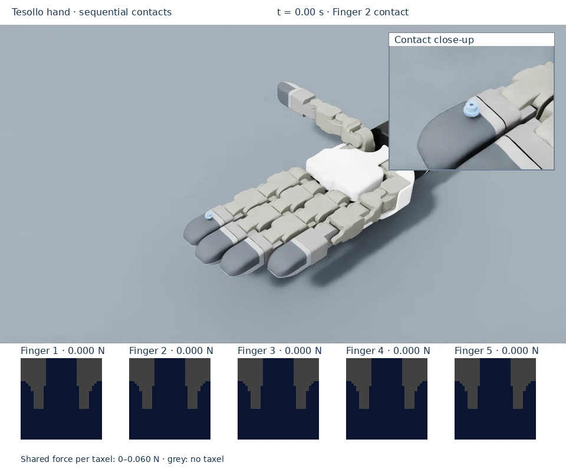
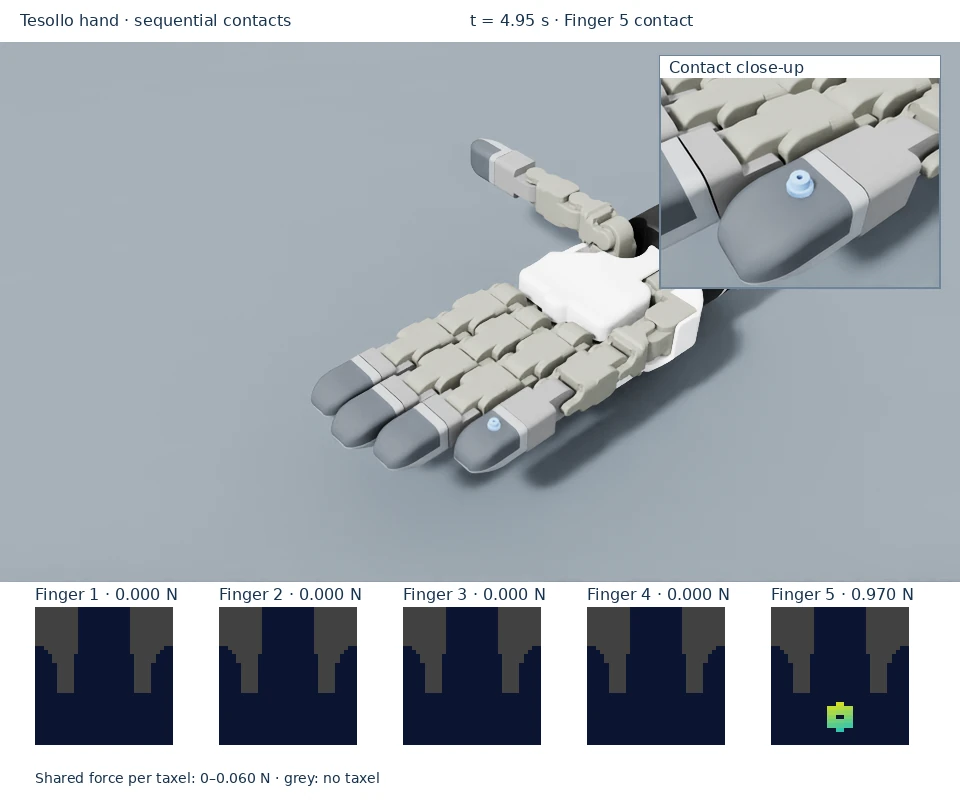

Tesollo hand demo
Watch the object contact fingers 2–5 in turn. The active tactile frame follows the loaded finger while the remaining fingers stay unloaded.



Read the sequence
The gear is placed above finger 2 and drops into contact.
The contact frame shows the sampled footprint, with its total force in newtons.
The demo resets the gear over each following finger; the active frame moves across fingers 3, 4, and 5. Finger 1 is checked separately by the thumb probe.
The native camera inset follows the gear at its physical size (about 6.29 mm wide). Match that contact to the active patch in the corresponding finger’s unwrapped frame; the heatmap shows force per taxel, not an optical image.
Run the example
Prerequisites: installed environment, a supported NVIDIA GPU, and fetched Git LFS assets.
For a local desktop:
python scripts/dex01_on_tesollo_dg5f.py
A gear contacts fingers 2–5 in turn. The Isaac Sim viewport includes live firmware heatmaps and each finger’s measured normal load in newtons, so they appear in the WebRTC GUI. Blue is zero load; cyan, yellow and red show increasing force per taxel, with a shared adaptive scale printed below the images. Grey cells have no sensor taxel. Firmware row/column positions are preserved, with no smoothing: the contact footprint (including gear teeth when resolved by the sampling) is visible rather than just an aggregate force. These frames unwrap the curved fingertip; they are not an optical picture of the object.
Inspect a known contact

The local flat-load fixture on finger 2. The corresponding tactile frame is active only on the loaded finger; the total load is near 0.981 N after settling.
Use a flat indenter for quantitative known-load validation. The gear can rock and is not a calibration fixture.